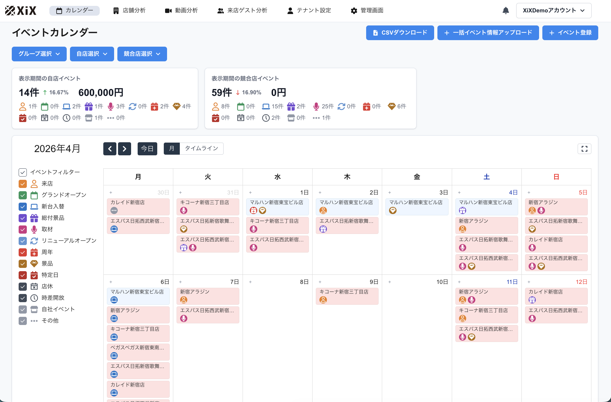
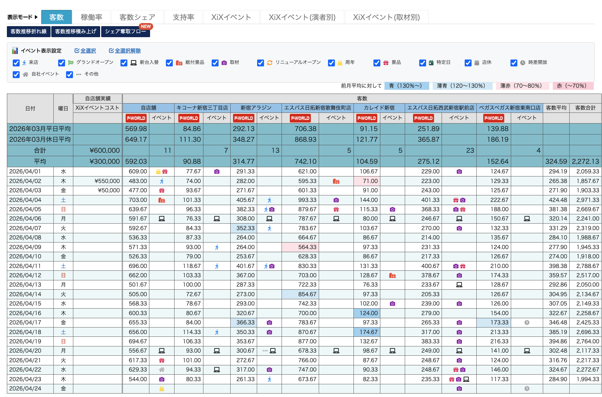
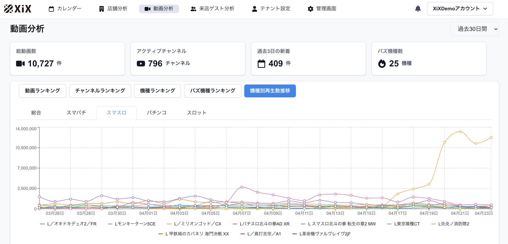
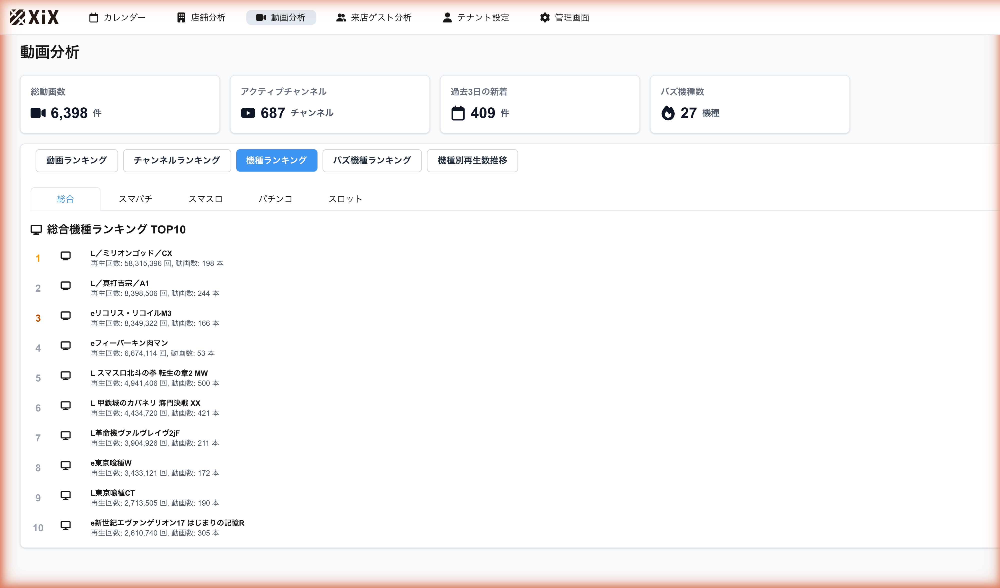
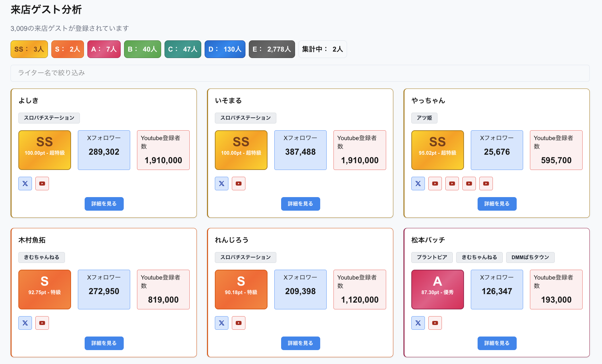
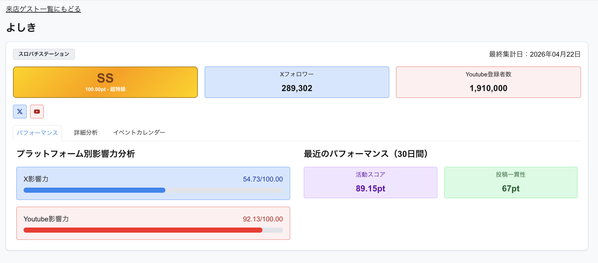

新台入替・取材・ライター来店・景品イベント── あらゆるイベント情報をインターネット上から自動取得し、 自店も競合店も、同じカレンダーで俯瞰する。 パチンコホール特化のイベントインテリジェンス XiX（ザイクス）。
1つでもチェックが付いたら、XiXが解決します。
新台・取材・ライター来店・景品イベント──パチンコホール経営に必要な"情報の視界"を、XiXはまるごと変えます。
X（旧Twitter）・YouTube・公式サイトから、新台入替／取材／ライター来店／景品イベントを24時間自動収集。自店も競合店も、同じカレンダー上で時系列に整列します。"毎朝SNSを開いて集計する"業務は、もう不要です。

SNSの巡回・書き起こし・エクセル転記に費やしていた時間を、スタッフ教育・接客・企画立案へ。毎朝の"情報収集"はXiXが寝ている間に終わらせます。集計業務から解放された時間は、現場を前に進める時間に変わります。
自店だけ見て「良かった／悪かった」は、もう終わりです。競合店のその日の仕掛けの難易度を考慮しなければ、イベント評価はブレ続けます。XiX のイベント情報を姉妹プロダクト P-Brain の商圏日別実績と連動させることで、H/Cデータ・商圏データと並列でイベントを可視化。アイコン／金額表示／ポップアップで「いつ・どこで・どんなイベントが、競合と比べてどうだったか」が一目で分かります。
※ この画面は P-Brain 側の分析ビューです。XiX 単体では提供していない機能で、P-Brain との連動によってのみご利用いただけます。

毎日追加されるパチンコ関連のYouTube動画を自動取得→機種マッチング。日別の機種別再生数をグラフ化し、ユーザーの期待値の推移を可視化。「今、どの機種に空気が向いているのか」を勘ではなく数値で掴めます。


約 3,009名の来店ゲスト と 1,575件の取材リスト をデータベース化。各ゲスト・取材の集客ポテンシャルをスコア化し、あなたの店舗・立地・ターゲット層に合致する人選を提案します。


全国店舗のイベント実施データを集約し、ゲスト別・取材別の"送客リフト"ベンチマークを公開予定（2026年夏）。自店のゲスト選定が「全国平均と比べて効いているのか」を、業界で初めて定量比較できるようになります。
XiX導入で営業判断の質が劇的に変化します。
毎朝SNSを巡回してエクセル転記。本業に使う時間が削られる
自店のイベント評価が"競合補正"されず、判断がブレ続ける
「いつもの人選」「なんとなく効きそう」で決めている
どの機種に空気が向いているかを勘でしか掴めない
SNS・公式サイトから24時間自動収集、カレンダーに自動反映
P-BrainのH/C・商圏データと並列表示、競合仕掛け難易度を織り込む
3,009ゲスト・1,575取材のスコア化で、集客ポテンシャルを定量比較
機種別・日別の再生数推移で、ユーザー期待値の動きを可視化
"誰を呼べば効くか"に、データで答える。
開発元は 株式会社頓智WORKS（代表 寺澤尚己／パチンコ業界18年）。P-Brain 受託開発の実績を持つ、業界をわかった会社のプロダクトです。
パチンコ業界の定番 P-Brain と公式連動。H/C・商圏・実績データと同画面で並列比較し、"競合補正"された正しい効果測定を実現します。
先行受付から、段階的に機能を拡張していきます。
SNSデータ連携／イベントカレンダー／ライター情報管理／YouTube分析／P-Brain連動
ゲスト別・取材別の"送客リフト"ベンチマーク公開／AIによる日報自動作成／イベントROI可視化
AIがSNS投稿内容やイベントを自動提案。効果予測・感情分析・予算設定に基づき、経験の少ない担当者でも成果を出せるツールへ。
単体利用可能です。ただし、P-Brainと連動させると③の"競合補正"効果測定が最大限活きます。
単店から大手チェーンまでスケール可能です。グループ・多店舗運営にも対応しています。
先行受付者は最短2週間で利用開始いただけます。
SNS情報は日次自動更新。重要イベントは準リアルタイムで反映します。
先行受付者には店舗数連動プランで個別ご案内しています。お問い合わせください。
P-Brain連動を標準サポートしています。他システムについてはご相談ください。
先行受付の特典：
✓ 2026年夏"全国イベントデータ"への早期アクセス権
✓ 導入時の 初期設定サポート無償
✓ P-Brainユーザー向け 連動設定の優先実施
※ 残り 31法人／58店舗。上限到達次第、受付を終了します。
自動返信メールをお送りしました。
担当者より3営業日以内にご連絡いたします。
メールが届かない場合は迷惑メールフォルダをご確認の上、info@tonchi.works までご連絡ください。